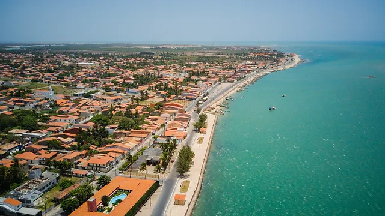
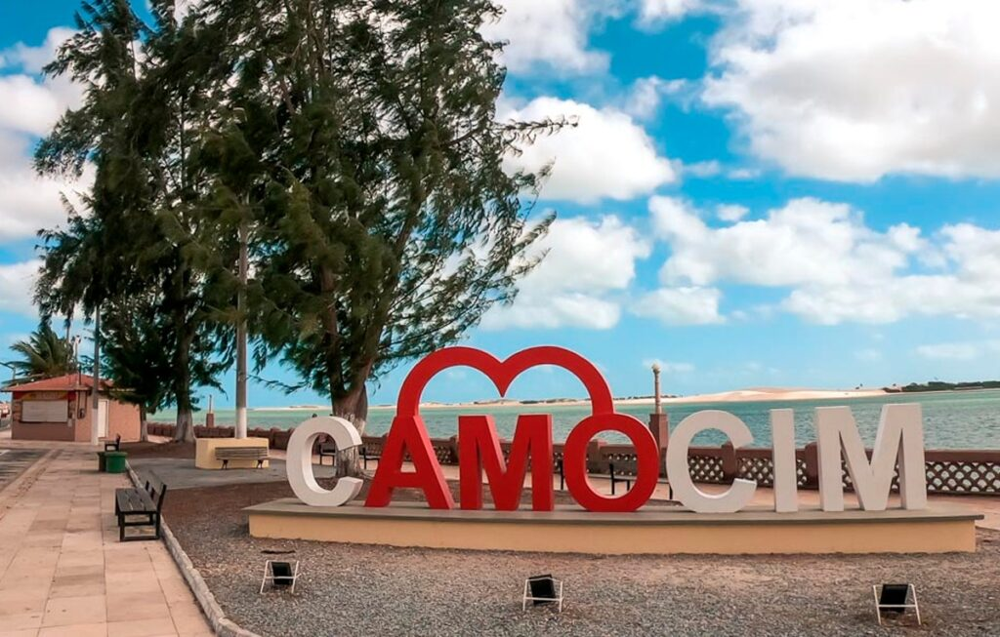

Site 100% Criado por um Nativo!


Confeitarias geram empregos locais, desde padeiros e confeiteiros até vendedores e pessoal de atendimento ao cliente, contribuindo para a estabilidade econômica da cidade.
Confeitarias enriquecem a oferta gastronômica da cidade, proporcionando uma variedade de produtos doces, bolos, tortas e sobremesas que contribuem para a diversidade cultural e culinária.
Confeitarias desempenham um papel importante em celebrações e eventos especiais, oferecendo bolos e doces personalizados que tornam essas ocasiões ainda mais memoráveis.
Confeitarias muitas vezes se tornam ícones locais, contribuindo para a identidade única de uma cidade e atraindo tanto moradores quanto visitantes.
Confeitarias são frequentemente locais de experimentação culinária, introduzindo novos sabores, técnicas e tendências na cena gastronômica local.
Confeitarias fornecem espaços acolhedores e aconchegantes onde as pessoas podem se encontrar, socializar e desfrutar de momentos descontraídos em um ambiente agradável.
Ao utilizar ingredientes locais, as confeitarias contribuem para apoiar a agricultura local e promover a sustentabilidade na produção de alimentos.
Confeitarias podem se tornar atrações turísticas, especialmente se oferecerem produtos únicos e de alta qualidade. Isso pode atrair turistas interessados em explorar a culinária local.
A decoração de bolos e a apresentação de sobremesas são frequentemente formas de expressão artística. Confeitarias estimulam a criatividade e a apreciação da arte na culinária.
Confeitarias muitas vezes participam de eventos comunitários, fornecendo produtos para festivais, feiras e outras atividades que fortalecem os laços sociais na cidade.